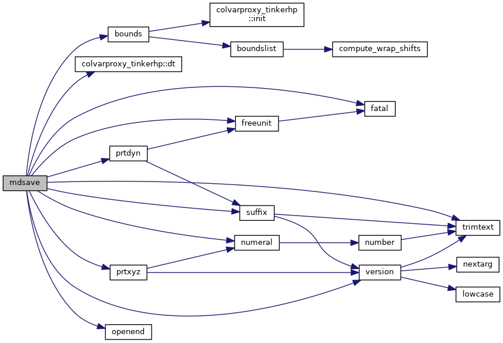
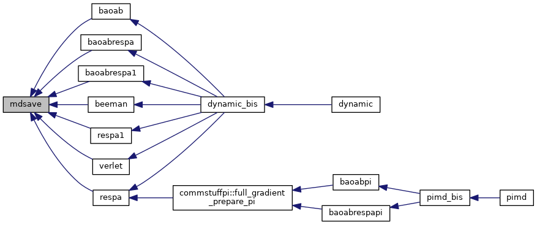

|
Tinker-HP v1.3
|
|
Tinker-HP v1.3
|
Go to the source code of this file.
Functions/Subroutines | |
| subroutine | mdsave (istep, dt, epot, derivs) |
| writes molecular dynamics trajectory snapshots and auxiliary files with velocity, force or induced dipole data; also checks for user requested termination of a simulation More... | |
| subroutine mdsave | ( | integer | istep, |
| real*8 | dt, | ||
| real*8 | epot, | ||
| real*8, dimension(3,*) | derivs | ||
| ) |
writes molecular dynamics trajectory snapshots and auxiliary files with velocity, force or induced dipole data; also checks for user requested termination of a simulation
| [in] | istep,: | index of timestep |
| [in] | dt,: | timestep |
| [in] | epot,: | value of potential energy |
| [in] | derivs,: | derivatives of potential energy wrt cartesian coordinates |
Definition at line 26 of file mdsave.f90.
References bounds(), colvarproxy_tinkerhp::dt(), fatal(), freeunit(), numeral(), openend(), prtdyn(), prtxyz(), suffix(), trimtext(), and version().
Referenced by baoab(), baoabrespa(), baoabrespa1(), beeman(), respa(), respa1(), and verlet().


 1.8.5
1.8.5